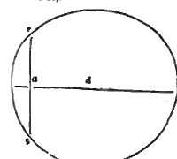
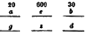
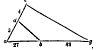
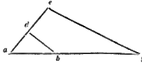
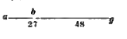
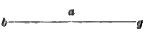
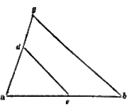
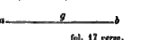
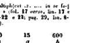

DISTINCTIO II — DE INVENTIONE RADICUM¶
Distinctio Secunda: Incipit Capitulum de Inuentione Radicum
Fons Criticus: boncompagni:1862 (Scritti di Leonardo Pisano, Vol. II, pp. 18–30 · Cod. Urb. Lat. 292, fol. 11v–18v) · English Translation · Summary · GEOMETOR Notes
Distinctio Secunda — De Inuentione Radicum¶
Versio Anglica: Distinctio II — Square Roots (pp. 18–30) · Commentarius: Notae ad Inuentionem Radicum
CVM autem per geometricales regulas campos mensurare uolumus, oportet nos in quibusdam dimensionibus radices quinque numerorum inuenire. Quare qualiter radices numerorum inueniatur, secundum quod in hoc opere sufficere uideatur, presentialiter demonstrare curaui. Est enim radix numeri latus alicuius quadrature; quia cum multiplicatur latus in se ipsum, perficitur embadum illius quadrature : quare summa multiplicationis lateris recte dicitur quadratus; cum in se quadratam contineat superficiem.
Et est notandum, quia una figura est radix numerorum unius figure, et duarum; due
f. 0026 · p. 19figure sunt radix trium, et quatuor; tres figure sunt radix quinque figurarum, et sex; quatuor figure sunt radix septem figurarum, et octo, et sic deinceps. Radices autem quadratorum numerorum unius figure, et duarum oportet scire cordetenus, ut possimus cum ipsis in inuentione radicum plurium figurarum subtilius procedere. Est enim unum radix de .1; quia semel unum, unum facit; et 2 sunt radix de .4., et 3 de 9, et 4 de 16., et 5 de 25., et 6 de 36, et .7 de 49, et 8 de 64, et 9 de 81., et 10 de .100. Reliqui uero, qui sunt infra hos quadratos numeros, non habent radicem. Sed possumus radici ipsorum cum minutis quantum necesse est per plures modos subtiliter appropinquare; quod in suo demonstrabitur loco. Cvm autem uolueris inuenire radicem integram alicuius numeri trium figurarum, inuenias primum radicem ultime figure; et pones eam sub secundo gradu; cum scias duas figuras esse necessarias in radice trium figurarum; et sic erit una sub secunda, et alia cadet sub prima: et quod superauerit ex ipsa tertia figura, pones super ipsam tertiam figuram; et copulabis ipsum superfluum cum secunda figura; et pones aliam figuram sub prima, scilicet ante figuram, que est posita sub secunda ; que multiplicata per duplum posite figure in radice, faciat ita prope dicte copulationis, ut de superfluo quod inde superfuerit copulato cum prima figura possis extrahere multiplicationem ipsius figure in se ipsam; et non remaneat inde ultra duplum radicis inuente: et si de ultima figura nihil remanserit, intelliges euenire de secunda figura hoc quod diximus de copulatione superflui tertie figure cum secunda. Verbi gratia : uolumus reperire radicem de .153., inuenies radicem de .1., quod est in tertio gradu, que est .1.; quod .1. pone sub .5., et ante ipsum .1. pone .2 sub .3.; quia multiplicato .2. in duplo radicis inuente, scilicet in .2., faciunt .4.; quibus extractis de .5., remanet .1. super ipsum .5.; quo .1. copulato cum .3. primi gradus, facit 13.; de quo possumus extrahere multiplicationem de .2. in se ipsum, et remanet inde .9., que sunt minus duplo radicis inuente, scilicet de .24.: ergo integra radix de .153. est .12, et remanent .9. Item si uis inuenire radicem de .864., pone .2 sub .6., cum .2 sint integra radix de .8.; et 4 que remanent pone super .8.: deinde dupla ipsa .2., erunt .4., que pone sub .2.; et per ipsa .4 diuide .46., scilicet copulationem superflui tertie figure cum secunda, exibunt .11.: ex qua diuisione possumus habere arbitrium sequentis ponende figure, que multiplicanda est per duplum prime figure posite; et postea per se ipsam, erit ipsa figura aut parum minus, aut totidem quantum ex ipsa diuisione euenit; quod cognosces ex usu. Quare ponemus arbitrio .9. sub prima figura, que sunt minus de .11. predictis; et multiplicabis .9. per .4., scilicet per duplum inuenti binarij, et extrahes de 46. predictis, et ex remanentibus .10. pones 0. super .6., et .1. super .4.; et copulabis ipsa 10. cum .4. primi gradus, erunt .104.; de quibus extracta multiplicatione nouenarij in se ipso, remanent .23.; que .23. sunt minus dupla radicis inuente.
Rursus si radicem de .960 inuenire uolueris, pone radicem de .9., scilicet .3 sub .6.; et dupla ipsa .3., erunt .6., que pones sub ipso .3.; per que .6. oportet quandam figuram multiplicare, que ponenda est ante .3.; et ipsam multiplicationem de .6. superiore extrahere, et remaneat inde figura; que cum fuerit copulata cum .0.; et possis extrahere multiplicationem ipsius figure in se ipsam, et non remaneat ultra duplum radicis inuente; eritque illa figura .0. : quod .0. cum multiplicatum fuerit per .6., que fuerunt duplum de .3.; et ipsa multiplicatio extracta fuerit de .6., remanebunt eadem
f. 0027 · p. 206.; que cum copulata fuerint cum .0., quod est in primo gradu, faciunt .60.; de quibus .60. cum extracta fuerit multiplicatio de .0. in se ipso, remanebunt .60., que sunt duplum de 30, scilicet de radice inuenta. Si autem uolueris scire radicem numeri quatuor figurarum, inuenias primum radicem duarum figurarum ultimarum; et superfluum copulabis cum remanentibus duabus figuris, et operabis secundum hoc quod diximus in tribus figuris: ad cuius rei euidentiam sint .1234.; quibus uolumus radicem inuenire: pone sub .3. radicem ultimarum figurarum, scilicet de .12.; que radix est .3., et remanentia .3. pones super .2. de .12.; et copulabis ipsa .3. cum sequentibus figuris, erunt .334.; et duplicabis radicem inuentam, erunt .6.; que pones sub .3., scilicet sub radice inuenta: et considera, quot sunt multiplicationes, que multiplicande sunt secundum hoc quod dictum est superius; et quot sunt figure in numero, de quo debemus extrahere ipsas multiplicationes: sunt enim multiplicationes due, quarum una est multiplicatio ponende figure per duplum radicis inuente, scilicet per .6.; alia multiplicatio est ipsius ponende figure in se ipsam: has quidem duas multiplicationes debemus extrahere de .334., et finire ultimam multiplicationem sub figura primi gradus. Ideo primam multiplicationem oportet extrahere de copulatione duarum figurarum ultimarum, scilicet de .33.; et ex copulatione superflui, et quaternarij, qui est in primo gradu, extrahes aliam. Quare pones .5. sub primo gradu; quia diuisis .33 per .6., reddunt .5.; et multiplicetur .5. per .6., et extrahatur ipsa multiplicatio, scilicet 30 de 33, et remanebunt .3. in secundo gradu: que .3. copula cum .4. primi gradus, faciunt .34.; de quibus extrahe multiplicationem de .5. in se ipsum, remanent .9.; et sic habes 35 pro radice de 1234, et remanent .9. Rursus si uolueris inuenire radicem de .6142. Inuenias radicem de .61., quem (sic) est .7., et remanent .12.: pone .7. sub .4., et 12 pone super .61.; et duplicabis .7. inuenta, erunt .14.; pones .4. sub .7., et 1 post ipsum septenarium; et intelligas copulationem remanentium .12. cum .42.; que copulatio facit .1242., in quo numero sunt .4. figure, ex quibus sunt extrahende tres multiplicationes. Quarum prima est ponende figure per positum unum, et alia per .4., que sunt ante ipsum .1., et alia per se ipsam: quas tres multiplicationes debemus gradatim extrahere de .4. dictis figuris, ita ut ultima multiplicatio cadat in primo gradu. Et quoniam numerus figurarum excedit numerum multiplicationum in una figura, pro ipsa una figura oportet copulare ultimam figuram de 1242. cum sequente, erunt .12.; de quo .12. extrahe primam multiplicationem; et deinceps cadet secunda multiplicatio sub secundo gradu, et ultima sub primo: quare pones .8. ante posita .7.; et multiplicabis .8. per .1. predictum, et extrahes de .12., remanebunt tibi .4.: que copulabis cum sequentibus .4., que sunt in secundo gradu, erunt .44.; de quibus extrahe multiplicationem de .8. in .4.; que .4. sunt sub .7., remanent .12., que pone super .44.; et copulabis ipsa cum .2. primi gradus, erunt .122. : de quibus extrahes 64., scilicet multiplicationem de .8. in se, remanent .58.; et sic habes .78. pro radice de .6142., et remanent .58. Verum si radicem de .8172. reperire uolueris, radicem de 81., scilicet .9., pone sub .7.; et de duplo ipsius .9 pone .8 sub .9., et .1. post ipsum uersus sinistram; in quibus .1. et 8 oportet multiplicare ponendam figuram singulariter, et de inceps ipsam figuram in se ipsam; et sic sunt tres multiplicationes, que sunt extrahende gradatim de 72., que remanent de .81. post inuentionem radicis de .81.: unde euidenter cognoscimus, nullam post se cadere preter .0., cum deficiat gradus, unde possit extrahi prima multiplicatio; quia si prima multiplicatio extrahatur de .7., oportet
f. 0028 · p. 21secundam extrahere de .2.; et sic non habemus unde extraheremus tertiam multiplicationem. Vel aliter, quoniam primus gradus quemcumque gradum multiplicat, ipsum gradum surgit ex multiplicatione; quare ponenda figura, que cadit in primo gradu multiplicata in tertio gradu, scilicet in .1., facit tertium gradum; qui gradus minime est in .72.: ergo radix de \(8^{m}\), et 172 est 90, et remanent .72. Et si uolueris radicem alicui numero quinque figurarum inuenire, inuenies per premissam doctrinam radicem tribus ultimis figuris: et si inde aliquid superfuerit, pones illum superfluum super ipsum gradum; uel gradus de quo, uel de quibus superfuerit; et copulabis ipsum superfluum cum duabus reliquis figuris; et pones duplum inuente radicis sub ipsa radice; similem gradum sub similj gradu; et per premissam notitiam studebis ponere aliam figuram sub primo gradu; quia prima figura in radice quinque figurarum cadit sub tertio gradu, cum tres figure sint radix numerorum quinque figurarum. Verbi gratia : uolumus inuenire radicem de 12345. Inuenias quidem primum radicem de 123., que est .11, et remanent .2; et cum inueneris ipsa .11., pones primam .1. de .11. sub .3., et aliam sub .4.; et duplicabis ipsum .11., erunt .22, que pone sub .11.; et .2. que remanserunt pone super .3.; et copulabis ipsum .2 cum sequentibus figuris, erunt .245., in quo numero sunt tres figure; et multiplicationes quidem fiende erunt similiter tres. Quare de singula figura exit singula multiplicatio. Vnde oportet ponere talem figuram ante posita .11.; que cum multiplicata fuerit per primum binarium, postea per secundum, postea per se ipsam, possit prima multiplicatio exire de .2., que remanserunt super .3.; et alia de .4.; et alia de .5., que sunt in primo gradu; eritque illa figura .1.: multiplicato quidem .1. per primum binarium extracta; et extracta ipsa multiplicatione de duobus, que sunt super .3., remanet nihil. Item multiplicato ipso .1. per sequentem binarium, et extracto de .4., remanent .2. super .4.; quibus .2. copulatis cum .5. primi gradus, faciunt .25.; de quibus extracto .1., quod surgit ex multiplicatione de .1. in se ipso, remanent .24.; et sic habes .111. pro radice de 12345., et remanent .24. Quod si rectum est, ita per qualem uis probam cognoscitur: probam de .111. in se ipsam multiplica, et ex ipsa multiplicatione probam accipe; et super acceptam probam adde probam de .24.; et si ex hoc habueris, scilicet probam de 12345., rectum est quod fecimus. Verbi gratia: proba de 111. per .7 est .6; quia diuisis .111. per 7, remanent .6.; quibus in se multiplicatis, faciunt .36.; quibus per .7. diuisis, remanet .1.; quo addito cum proba de .24., que est .3, faciunt .4., scilicet probam de 12345.; quia diuisis .12345 per .7., remanent .4.; et hoc uolumus: et secundum hunc modum probabis semper in inuentione radicum. Rursus si uis inuenire radicem de 98765., inuenies radicem de .987., que est .31., et remanent .26.: pone .3. sub .7., et .1. sub .6., remanentem .26. pone super 87., scilicet 2. super .8, et 6 super .7.; et copulabis .26. cum alijs duabus figuris, erunt .2665.; et duplicabis 31, et habebis .6. sub .3., et 2 sub .1.: et quia quatuor restant figure in numero, quas gradatim debemus delere per tres multiplicationes, que fieri debent cum figura ponenda ante .31.; quarum una erit per .6., et alia per 2, et alia per se ipsam; oportet itaque, ut primam multiplicationem accipiamus de .26.: quare diuides .26. per 6., que sunt duplum de 3 inuentis in radice; et positis sub .3., exibunt .4.; et ideo ponenda sunt .4. ante .31.; ponemus ergo .4. ante .31., cum fieri possit; et multiplicabis ipsa .4 per .6., et extrahes de .26., et remanentia .2. pone super .6; et copulabis ipsa cum .6., que sunt in secundo gradu, faciunt 26.: de quo numero extrahes multiplicationem de .4. in .2.,
f. 0029 · p. 22que posita sunt sub .1., remanent .18., uidelicet .1. super .2., et .8 super .9.: et copulabis ipsa .18 cum .5 primi gradus, erunt .185.; de quibus extrahes multiplicationem de .4. in se ipsis, remanent .169.; et sic habes .314 pro radice de 98765, et remanent 169. Et si uolueris inuenire radicem alicui numero sex figurarum. Inuenias primum radicem quatuor ultimis figuris; et residuum quod superfuerit, copulabis cum sequentibus duabus figuris; et deinceps operabis ut supra. Verbi gratia : uolumus reperire radicem de 123456. Inuenies primum radicem de .1234, que est 35, et remanent .9.; et pone .35 sub .45.; et .9. que remanent pone sub .4.; et copulabis ipsa .9. cum .56., faciunt .956.; et duplicabis inuentum .35., erunt .70.; de quibus pone .0. sub .5., et 7 sub .3.; et quoniam figure sunt tres que restant; et multiplicationes sunt tres, quarum prima debet fieri per .7., secunda pro zefiro, tertia exponenda figura in se; tunc scimus, quia prima multiplicatio debet exire de .9.: quare diuide .9. per .7., exibit unum pro ponenda figura ante .35. Quo uno multiplicato per .7., et extracta ipsa multiplicatione de .9., remanent .2. super .9.; quibus copulatis cum .5., et inde extracta secunda multiplicatione, scilicet de .1. in zefiro, remanent 25: quibus copulatis cum sequente figura, faciunt .256.; ex quibus extracta multiplicatione de .1. in se ipso, remanent .255.; et sic habemus .351. pro radice de .123456., et remanent .255. Rursus si uolueris inuenire radicem de 987654. Inuenies primum radicem de .9876., que est .99., et remanent .75.: pone .99. sub 65., et 75 super .76.; et duplicabis radicem inuentam, erunt .198.: de quo numero pones 8 sub .9., que sunt in secundo gradu, et 9 sub 9, que sunt in tertio gradu; et .1. pones post ipsa; et copulabis 75 cum 54., erunt .7554., in quo numero sunt quatuor figure, quas debemus delere gradatim per quatuor multiplicationes, quas facere debemus cum ponenda figura, scilicet per tres figuras de .198., et per se ipsam: quare primam multiplicationem oportet extrahere de .7. tantum: et si cognoscimus ponendam figuram esse .3. ante .99.; quo .3. multiplicato per .1. de .198., et extracta ipsa multiplicatione de .7., remanent .4. super ipsis .7.: quibus copulatis cum .5. tertij gradus, faciunt .45.: de quo extracta multiplicatione de .3. in .9. de .198., remanent .18. super quartum et tertium gradum: quo 18 copulato cum .5., qui est in secundo gradu, faciunt .185.; de quibus extracta multiplicatione de .3. in .8. de 198, remanent .161. super quartum, et tertium, et secundum gradum: quibus 161. copulatis cum .4. primi gradus, faciunt 1614.: de quibus extracta multiplicatione de .3. in se, remanent .1605.; et in radice habemus .993. Item si uolueris inuenire radicem alicuius numeri septem figurarum. Inuenies primum radicem quinque figuris ultimis; et residuum, si fuerit, copulabis cum reliquis duabus figuris; et operaberis ut supra. Verbi gratia : uolumus inuenire radicem de .9876543.; et quoniam radix septem figurarum sunt quatuor figure, oportet ponere primam figuram radicis sub quarto gradu, et sequentem figuram sub tertio, aliam sub secundo: quas tres figuras inuenies inueniendo radicem quinque figurarum ultimarum, scilicet de 98765.; quorum radix est .314., et remanent .169. super quintum, et quartum, et tertium gradum: quibus 169. copulatis cum duabus reliquis figuris, scilicet cum .43, faciunt .16943.: deinde duplica inuenta .314., et habebis .8. sub .4., et 2 sub .1., et 6 sub .3.: per quas tres figuras multiplicanda est gradatim ponenda figura, et deinceps in se ipsam; et sic erunt quatuor multiplicationes, quas debemus extrahere gradatim de quinque figuris predictis, scilicet
f. 0030 · p. 23de .16.; quare diuides .16. per .6., qui primus multiplicandus est, exibunt .2.: quare pones .2. in primo gradu radicis; et multiplica ea per .6. de 628., erunt .12.; que extrahes de .16, remanent .4. super .6.; que copulabis cum .9, faciunt, .49: de quibus extrahes multiplicationem de .2. in .2, remanent .45 super 49; que copulabis cum .4. secundi gradus, faciunt .454.; de quibus extrahes multiplicationem de .2. in .8., remanent .438., scilicet .4 super quartum gradum, et 3 super tertium, et 8 super secundum: et copulabis .438. cum .3 primi gradus, faciunt 4383; de quibus extrahes multiplicationem de 2 in se ipsis, remanent .4379., que sunt minus duplo radicis inuente; et radix est .3142. Similiter si uis inuenire radicem octo figurarum, inuenies radicem sex figuris ultimis; et copulabis residuum cum reliquis duabus figuris, ut dictum est. Et sic cum his que dicta sunt possunt radices in infinitum quorumlibet numerorum inueniri. Nam si scire desideras quot figure erunt in radice alicuius numeri multarum figurarum, considera si numerus figurarum ipsius numeri fuerit par, uel impar. Si fuerit par, dimidia ipsum numerum; et quot unitates sunt in medietate, tot figure erunt in radice ipsius. Si uero fuerit inpar, adde numero ipsorum unum, ut efficiatur numerus figurarum par. Et tunc quot unitates erunt in medietate numeri ipsarum, tot figure similiter erunt in radice. Et tunc incipies ponere primam figuram sub ipso gradu sub quo ceciderit. Nam si fractiones, que cadunt de superfluo inuentarum integrarum radicum, prope ueritatem nosse desideras, considera utrum numerus ille, cui radicem inueneris, fuerit perticarum secundum geometriam, aut graduum secundum astronomiam.
Quia in radicibus perticarum fractiones in pedibus, deinde in unceis, et in partes unciarum reducere necesse est. In radicibus quoque graduum fractiones in minutis, et in secundis, et in partibus secundorum reducende sunt. Est enim pertica, ut diximus, pedes .6.; et pes est uncie .18.; et uncia est \(\frac{1}{18}\) pedis; et pes est sexta pertice; pertica tota est uncie .108. Item gradus diuiditur in minutis .60., et minutum in secunda .60., et secundum similiter in tertia .60.; quare totus gradus est secunda .3600., et tertia 216000.: quibus ad memoriam reductis, cum uolueris radicem alicui numero perticarum inuenire, multiplica ipsas perticas per multiplicationem de .108. uicibus 108., hoc est per .11664.; et sume (sic) multiplicationis radicem inuenias; et habebis numerum unciarum, que sunt in radice quesita: quibus unceis diuisis per .18., reddunt pedes, qui sunt in illa radice. Quibus pedibus in .6. diuisis, reddunt perticas. Verbi gratia: uolumus inuenire radicem de perticis 67., multiplica 67 per 11664., erunt 781488.; quibus inuenias radicem, que est .884., et remanent .32.: que 32 diuide per duplum de .884.; uel dimidium de 32, scilicet .16, diuide per 884., exibit fere \(\frac{1}{55}\): ergo radix de perticis 67. sunt uncie 684, et \(\frac{1}{55}\); quibus unceis diuisis per .18. reddunt pedes 49, et remanent uncie 2, et \(\frac{1}{55}\): quibus pedibus .49. diuisis per 6 reddunt perticas 8, et remanent pes (sic) .1.: ergo radix de perticis .67 est pertice .8., et pes .1., et uncie 2, et \(\frac{1}{55}\); ct sic studeas facere in omnibus similibus. Et si uolueris radicem numero graduum inuenire. Multiplica secunda unius gradus, scilicet 3600. in se ipsis, erunt .12960000; per quem numerum multiplica gradus, quibus radicem inuenire desideras; et summe multiplicationis radicem inuenias; et superfluum diuide per duplum radicis inuente, et habebis secunda, que fuerint in radice quesita: quibus secundis diuisis in .60. reddent minuta : quibus minutis diuisis in .60., reddent gradus; et sic habebis gradus, et minuta, et secunda, et partes unius secundi, que fuerint
f. 0031 · p. 24in radice quorumlibet graduum. Et si primum perticas, deinde pedes, post hoc uncias, ad extremum partes uncie, que sunt in radice quarumlibet perticarum, gradatim inuenire desideras. Inuenias primum radicem perticarum, ut dictum est: deinde de perticis que remanserint, fac dimidios soldos, scilicet pedes; et diuide eos per duplum perticarum inuentarum in radice, et habebis pedes; et ex hoc quod remanserit, fac denarios; ex quibus extrahe multiplicationem peduum inuentorum in se ipsos; residuumque triplicabis, scilicet facies inde uncias; quas diuides iterum per duplum perticarum, et pedum inuentorum in radice, et habebis perticas, et pedes, et uncias, et partes uncie, que sunt in radice quarumlibet perticarum. Verbi gratia. Volumus iterum radicem de perticis 67. inuenire; primum quidem radix de perticis .67. sunt pertice .8. in integrum, et remanent pertice .3., que sunt medij soldi, uel pedes .18.: quibus diuisis per duplum de .8., scilicet per 16, egreditur pes .1., et remanent pedes .2., qui sunt denarij .12.: ex quibus extrahe multiplicationem unius pedis in se ipso, scilicet denarium unum; quia cum pes multiplicatur in pedem, facit denarium, ut dictum est, remanent denarj .11.: quibus multiplicatis per .3. faciunt uncias .33.; quibus diuisis per duplum de perticis .8., et pedem .1., scilicet scilicet (sic) per \(\frac{1}{3}\ 16\), ueniunt uncie 2, et remanet \(\frac{1}{3}\) unius uncie: de qua \(\frac{1}{3}\) si extraxerimus multiplicationem inuentarum duarum unciarum in se ipsis, remanebit ex ipsa tertia uncie, quasi \(\frac{1}{55}\) unius uncie; cum diuiserimus ipsum superfluum per duplum radicis inuente. Rursus si uolueris inuenire per hunc modum radicem de perticis .111., accipe radicem integram ipsarum, scilicet .10.; et dupla, erunt .20.; per quem diuide pedes perticarum .11. superfluarum, scilicet 66., exibunt pedes .3., et remanent pedes .6., scilicet denari .36.: ex quibus extractis denarijs .9., qui procreantur ex multiplicatione peduum .3. in se, remanent denari .27.; quibus triplicatis faciunt uncias 81.; quibus diuisis per duplum radicis inuente, scilicet per .21., exibunt uncie \(\frac{6}{7}\ 3\), et non remanet inde aliquid, unde possis extrahere multiplicationem unciarum inuentarum in se ipsis: quare pone aliquantulum minus de \(\frac{6}{7}\) unius uncie; et sic habebis perticas .10., et pedes .3., et uncias \(\frac{5}{6}\ 3\). pro radice de perticis .111. Et nota ea que superius diximus de multiplicatione perticarum, et pedum, et unciarum in perticas, et pedes, et uncias; et cognosces unde procedunt ea que facimus in inuentione peduum, et unciarum in radicibus.
Item si uis inuenire radicem de perticis 1234. Integra quidem radix ipsarum est pertice 35., et remanent pertice .9; que pertice 9. sunt pedes .54. : per quos pedes .54., cum sit minus duplo radicis inuente, scilicet de .70., cognoscimus in hac radice nequaquam cadere pedes: quare de pedibus 54 facies uncias, erunt uncie .972.; quas diuide per .70., exibunt uncie .13, et \(\frac{7}{8}\); et non remanet inde unde extrahas multiplicationem de unceis \(\frac{7}{8}\ 13\). in se ipsis: quare per \(\frac{7}{8}\) pone minus, scilicet \(\frac{6}{7}\), uel \(\frac{5}{6}\), uel \(\frac{4}{5}\), uel \(\frac{3}{4}\) ad libitum; quia ita facendo, parum poteris deuiare; et sic, secundum hunc modum, potes cuilibet numero perticarum, uel perticarum et peduum; etiam et perticarum, et peduum, et unciarum radicem subtiliter inuenire.
De fractionibus quidem graduum in minuta et secunda inueniendis in libro nostro abaci satis aperte monstrauimus; uere quidem radices numerorum, qui non sunt quadrati, in lineis haberi possunt, in numeris uero minime. Est enim modus reperiendi radices in lineis, ut protrahas lineam illius quantitatis, uel numeri, cuius radicem
f. 0032 · p. 25



habere desideras, eique lineam unius unitatis super addas, et in medio illius linee centrum figas, in spatio dimidie linee circulum ducas; et a puncto, quod est inter unitatem et lineam, ad rectos angulos lineam usque ad circulum protrahe; et illa linea erit uera radix quesiti numeri. Exempli causa: uolumus radicem .67. inuenire. Adiaceat quedam recta .ab., que sit .67.; cui addatur in directo unitas .ag., erit tota .gb. 68: diuidaturque .gb. in duo equalia super punctum .d.; et spatio .dg. uel .db. circulus circinetur .gebz. Et protrahatur ad rectos angulos linea .ae.; dico quod linea .ae. uera radix est linee .ab., scilicet de 67.
Protrahatur quidem recta .ea. in directo ad punctum .z.; et quoniam recta .ba. stat super rectam .ez., facit duos angulos, aut rectos, aut duobus rectis equales. Rectus quidem qui sub .bae., rectus quoque, qui sub .baz. Et quoniam recta .ag. per centrum ducta secat quamdam rectam .ez. ad rectos angulos, ipsam rectam per equalia secare necesse est. Equalis ergo recte .ea. recta .az. Rursus quoniam in circulo .gebz. due recte, que sunt .bg. et .ez., se inuicem secant supra punctum .a., erit multiplicatio .ba. in .ag., sicut multiplicatio .ea. in .az. Sed multiplicatio .ae. in .az. est sicut multiplicatio .ea. in se ipsam. Quare multiplicatio .ba. in .ag. est sicut multiplicatio .ae. in se. Multiplicatio quidem .ba. in .ag., scilicet de .67. in .1., facit 67. Et multiplicatio uero ex .ae. in se facit similiter .67.; et hoc uolumus.
De multiplicatione radicum¶
Nvnc autem ostendamus, qualiter radices numerorum per radices multiplicentur. Et qualiter insimul addantur. Et quomodo minores de maioribus extrahantur. Etiam et quo ordine inter se diuidantur. Cvm autem uolueris multiplicare radicem de 16 per radicem de .25, cum 16 et 25 sint quadrati numeri. Accipe radices eorum, que sunt 4 et 5; et multiplica eas insimul, egredientur .20. pro quesita multiplicatione. Si uero radicem de 16 per radicem de 30. multiplicare uis; cum radix de 30 sit surda, multiplicabis .16 per 30, erunt .480.; quibus inuenies radicem quam propius poteris, et habebis summam dicte multiplicationis. Rursus si uolueris multiplicare radicem de 20 per radicem de 30., multiplica 20 per 30, erunt .600.; quibus inuenies radicem, et habebis propositum. Verbi gratia: sit .a. 20., et .b. .30., et g sit radix de .20., et d. sit radix de .30.; multiplicato quidem .a. in .b. faciat .e., scilicet .600.; et multiplicato .g. in .d. faciat .z. Dico quoniam .z. radix est sexcentorum, scilicet ex .e. Sed primo dicendum est, quod sicut aliquis numerus est ad aliquem numerum, ita est quoduis multiplex unius ad idem multiplex alterius; et que uis pars unius ad eandem partem alterius: quod probabimus in .12 et 24.: in qua enim proportione sunt 12 ad 24., in eadem est duplum de 12 ad duplum de 24., et triplum ad triplum, et deinceps quadruplum, et que secuntur multiplicia. Similiter in qua proportione est 12 ad 24, in eadem proportione est dimidium de 12. ad dimidium de 24., et tertium ad tertium, et deinceps: his itaque demonstratis, reuertamur ad proposita. Quoniam numerus .g. radix est numeri .a., scilicet de 20.; ergo .g., se ipsum multiplicans, .a. facit; et .g. quidem .d. multiplicans, numerum .z. facit. Quam multiplex ergo est a ex .g., tam multiplex est .z ex d.: quare sicut .g. est ad .d., ita .a. est ad .z. Rursus quoniam .d. radix est ex .b., scilicet de 30; cum .d. itaque se ipsum multiplicat, .b. facit. Sed .d. multiplicans .g, z facit. Quam multiplex ergo est .z. ex .g., tam multiplex est .b. ex .d. Quare sicut .g. est ad .d., ita .z.
f. 0033 · p. 26

est ad .b.: fuit itaque sicut .g. ad .d., ita .a. ad .z.: per equale uero est sicut .a. ad .z., ita .z. ad .b. Quare multiplicatio .a. in b. est sicut multiplicatio z. in se. Sed multiplicatio .a. in b. facit .e., scilicet 600. Et multiplicatio quidem de z. in se facit similiter .e. Ergo .z. radix est ex .e.; quod oportebat ostendere. Et notandum, cum numeri, quorum radices insimul multiplicantur, habent inter se proportionem quadratorum numerorum eorum, multiplicatio surgit in quadratum numerum. Quare multiplicatio radicum ipsorum surgit in numerum rationabilem. Verbi gratia: uolumus multiplicare radicem de .8. per radicem de .18.; quorum proportio est sicut .4. ad .9., scilicet sicut quadratus numerus ad quadratum numerum. Dico quod multiplicatio de .8. in .18. surgit in quadratum numerum, scilicet in .144; quorum radix, que est .12., est summa multiplicationis radicis de .8. in radicem de .18. Item si uis multiplicare 10 per radicem de .20, multiplica quadratum de .10., scilicet 100., per 20., erunt .2000.; quorum radix est summa dicte multiplicationis. Et nota quod id quod prouenit ex multiplicatione de .10. in radicem de .20., est equale .10. radicibus de .20. Vnde cum .10. radices de .20. uolumus redigere in radicem unius numeri, tunc multiplicamus quadratum de .10. in 20, et habemus .2000.; quorum radix est id quod aggregatur ex ipsis 10. radicibus: et hoc idem intelligendum est de similibus: unde si radicem alicuius numeri in plures radices alterius redigere uis, diuide ipsum numerum per aliquem quadratum numerum; et quot unitates fuerint in radice ipsius quadrati numeri, tot radices uenient exeuntis numeri ex diuisione. Verbi gratia: uis reducere radicem de .1200. in plures radices alterius numeri, diuides .1200. per aliquem quadratum numerum, ut dicamus per .16., et uenient 75; et accipe radicem de .16., que est .4.; et tot radices de 75. habebis pro una radice de .1200.: et si diuiserimus .1200. per 25, quorum radix est .5., habebimus .5. radices de .48. pro una radice de .1200. Et sic possumus radicem de .1200. in plures radices diuersorum numerorum reducere.
De addictione radicum¶
Radices quidem numerorum quandoque cum radicibus ita iunguntur, ut suma (sic) iunctionis earum surgit in aliquem numerum raciocinatum, aut in radicem alicuius numeri; et quandoque non possunt coniungi, ut ex eorum coniunctione numerus, aut radix numeri egrediatur.
Cvm autem radices quadratorum in unum coniungere uolumus, tunc ex eorum coniunctione numerus procreatur: ut si radicem de 16 cum radice de 25 addere uolumus, coadunabimus 4 et 5, scilicet radices de 16 et de 25, egredientur .9. pro quesita coniunctione.
Quando uero radices numerorum inter se proportionem quadratorum habentium coniungere uolumus, tunc egreditur radix alicuius numeri ratiocinati. Vnde qualiter addantur, dupliciter ostendamus. Volumus addere radicem de .27 cum radice de .48.; inuenias quadratos, qui sunt in eorum proportione; eritque .9 et 16.; quorum radices addas in unum, erunt .7.; que multiplica in se, erunt .49.; que triplica propter 27 et 48., que sunt triplum de 9 et de .16., erunt .147.; quorum radix est summa predicte iunctionis. Que regula probatur per proportiones similium triangulorum hoc modo: adiaceant in directo recte .ab. et .bg.; quarum .ab. sit radix de .27., et .bg. de 48.; et a puncto .a. angulum faciens protrahatur recta .ad.de.; et ad sit .3., et .de. sit .4.; et copuletur .eg.
f. 0034 · p. 27





et .db.: est itaque quadratum linee .ab. triplum quadrati linee .ad., et quadratum linee .bg. triplum quadrati linee .de. Ergo sicut .ab. recta est ad .ad., ita recta .bg. ad .de. Quare recta .db. equidistans est linee .eg. Vnde trigonum .adb. simile est trigono .aeg.; habent angulum .a. comunem; et angulus .adb. angulo .aeg.; et angulus .adb. angulo .age. sunt equales, scilicet exteriores interioribus. Est ergo sicut quadratus linee .ab. ad quadratum linee .ad., ita quadratus linee .ag. ad quadratum linee .ae. Sed quadratus linee .ab. quadrati linee .ad triplus est; quare quadratus linee .ag. quadrati linee .ae. est similiter triplus: sed quadratus linee .ae. est .49; quare quadratus linee .ag. est triplus, scilicet .147. Ergo ex coniunctione linearum .ab et .bg. egreditur radix de 147., ut oportebat ostendere. Et nota, quod omnes radices numerorum proportiones habentium inter se possunt reduci ad radices unius numeri, diuidendo antecedentem numerum per antecedentem quadratum, et consequentem per consequentem. Verbi gratia: si uis reducere radices de 27 et de 48. in radices unius numeri, diuides antecedentem numerum, scilicet 27, per antecedentem quadratum, scilicet per 9; et sequentem .48. per sequentem quadratum, scilicet per .16., et euenient .3. ex unaquaque diuisione. Ergo quot unitates sunt in radice de .9., tot radices de 3 sunt in radice de .27.; et quot unitates sunt in radice de 16., tot radices de .3. sunt in radice de 48.; et sic pro una radice de .27 habentur tres radices de 3; et pro una radice de 48 habentur 4 radices de .3. Vnde si eas aggregare uolumus, habebimus .7 radices de .3. pro earum aggregatione: quas si ad radicem unius numeri reducere uis, multiplica quadratum de .7. per 3; et eius quod prouenerit radicem accipe; et pro earum aggregatione habebis radicem de .147., ut supra. Aliter iungantur primum .27 cum .48., erunt .75.; et multiplicentur 27. per 48., et illius multiplicationis radicem duplica, erunt .72.; que cum .75. adde, et habebis similiter .147. pro quadrato dicte iunctionis.
Que etiam demonstrabimus per exemplum: adiaceat in directo recta .ab. recte .bg.; et sit .ab. radix de .27., et bg de .48. Volumus itaque quantitatem scire totius linee .ag. Quoniam linea .ag. diuisa est in duo super punctum .b., erunt duo quadrati portionum .ab. et .bg. cum duplo multiplicationis .ab. in .bg. equales quadrato totius linee .ag. Sed quadrati .ab. et .bg. sunt .27 et 48, scilicet .75.; et multiplicatio linee .ab. in .bg. surgit in radicem multiplicationis de .27. in .48., scilicet in .36.; quorum duplum sunt .72.; quibus additis cum .75., reddunt .147. pro quadrato linee .ag., ut prediximus. Si autem uolumus addere radicem de .20. cum radice de .30.; quia 20. et 30 inter se proportionem non habent, sicut quadratus numerus ad quadratum numerum; et hoc cognoscitur, quia multiplicatio de 20. in 30. surgit in numerum non habentem radicem. Ideo suma iunctionis earum radicum non surgit in numerum, neque in radicem numeri. Verbi gratia : sit recta .ba. radix de .20, et recta .ag. sit radix de 30., erit quadratus linee .ba. cum quadrato linee .ag. .50.; et multiplicatio .ba. in .ag. surgit in radicem de 600.; quare duplum multiplicationis .ba. in .ag. surgit in radicem quadrupli de 600., scilicet in radicem de 2400. : que cum radicem non habeant, scimus quod ex adiunctione predicta non possumus habere numerum, aut radicem numeri; sed habemus pro earum coniunctione radicem numeri, et radicis, hoc est radicem de 50., et radicis de 2400. Vnde, ut inde habeamus illud quod possumus, inueniatur radix de .2400. quam propius potest, que est 49, minus \(\frac{1}{98}\); et addantur 50 supradictis, erunt .99,
f. 0035 · p. 28




minus \(\frac{1}{98}\); quibus inuenies radicem, et habebis propositum: uel inuenias radicem de 20 et de .30. quam propius potes; et adde eas insimul, et habebis similiter propositum.
De extractione radicum¶
Si uero radicem quadrati numeri de radice quadrati numeri extrahere uolueris, ut radicem de 16 ex radice de 49., extrahes radicem de .16., scilicet .4., ex radice de .49., scilicet de .7., remanebunt .3. pro residuo dicte extractionis. Et si radicem de .45 ex radice de .125 extrahere uis; quia proportio eorum est proportio quadratorum, scilicet de .9. et de 25., extrahe radicem de 9 ex radice de .25., scilicet .3 de .5, remanent .2.; que multiplica in se, erunt .4.; que multiplica per 5. propter 45 et .125., que sunt quincupla de 9 et de .25., exibunt 20.; quorum radix est residuum dicte extractionis. Verbi gratia: adiaceat recta .ab., que sit radix de 125.; et a puncto .a. protrahatur recta .ag. faciens angulum .bag.; et sit .ag. .5., scilicet radix de 25.; et auferatur ex .ag. recta .gd., que sit 3, remanebit .da. 2.; et per punctum .d. protrahatur recta .de. equidistans lateri .gb.; et quoniam in trigono .agb. protracta est recta .de. equidistans lateri .bg., erunt latera .ab et .ag. proportionaliter secta in punctis .de., scilicet quod est sicut .ae. ad .eb., ita .ad. ad .dg. Coniunctim ergo est sicut .ba. ad .be., ita .ga. ad .gd.: et si permutauerimus, erit sicut .ba. ad .ag., ita .be. ad .gd. Quare est sicut quadratum lateris .ba. ad quadratum lateris .ag., ita quadratum linee .be. ad quadratum linee .gd. Sed quadratum lateris .ba. est quincuplum quadrati lateris .ag.; quare et quadratum recte .be. est quincuplum quadrati linee .gd.: est enim .9. quadratum linee .gd.; quare quadratum linee .be. est 45.: ergo linea .be. est radix de 45.; quam uolumus extrahere ex .ab., scilicet ex radice de .125., et inuenire residuum, scilicet lineam .ae.; cuius quadrati proportio est ad quadratum linee .ad., sicut quadratum linee .be. ad quadratum linee .gd. Quare quadratum linee .ae. est quincuplum quadrati linee .ad. Sed quadratum linee .ad. est .4.; ergo quadratum linee .ae., scilicet quesiti residui, est .20.; et sic .ae. inuenta est esse radix de .20., ut supra. Vel si radices de 45 et de 125. reduxerimus in radices de .5., habebimus pro radice de .45. tres radices de 5., et pro radice de 125. habebimus .5. radices de .5.: unde si de 5 radicibus de .5. auferantur .3. radices de .5., remanent 2 radices de .5., que sunt una radix de .20., ut inuentum est. Aliter adde .45 cum .125., erunt .170.; de quibus extrahes duplum radicis multiplicationis de .45. in .125., idest 150., remanent .20. pro quadrato quesiti residui. Ad cuius exemplum sit linea .ab. radix de .125.; de qua summatur linea .bg., que sit radix de 45.: dico quod linea .ga. est radix de 20. Quoniam linea .ab. in duo diuisa est super punctum .g., erunt duo quadrati linearum .ab. et .gb. equales quadrato .ag., et duplo multiplicationis .gb. in .ab.: sunt enim duo quadrati .ab. et .gb. .170.; quibus equantur quadratus linee .ag., et duplum multiplicationis .bg. in .ba. Sed .bg. in .ba. est radix multiplicationis de 45 in 125., scilicet .75.; que .75. duplicata faciunt .150.; que extracta de 170, remanent .20. pro quadrato linee .ag.; quod oportebat ostendere. Et si uis extrahere radicem de 20 ex radice de 30.; quia .20 et 30 non sunt in proportione quadratorum numerorum. Inuenies radicem de .20. et de 30 quam propius potes; et extrahe radicem de 20 de radice de 30.; et sic habebis residuum non ad plenum, sed fere: uel aliter adde .20 cum .30., erunt .50.; et multiplica .20 per 30., erunt .600.; de quibus accipe duas radices, scilicet duplum radicis eius, hoc est radicem quadrupli
f. 0036 · p. 29

de 600., que est fere 49., minus \(\frac{1}{98}\); et extrahe eam de 50., remanet \(\frac{1}{98}\ 1\); cui inuenias radicem, et habebis quesitum residuum, secundum propinquitatem.
De diuisione radicum¶
Si uis diuidere radicem de 600 per radicem de .40., diuide .600. per 40., exibunt .15.; quorum radix cadit ex diuisione predicta. Verbi gratia : sit .a. .40., et b. .600., et .g. .15.; et d. sit radix ex .a., et .e. ex .b.: diuidatur quidem .e. per .d., scilicet radix de .600., per radicem de .40., egrediatur .z. Dico .z. esse radicem ex .g., scilicet de .15.; quoniam diuiso .e. per d. facit .z. : si .d. multiplicat .z., facit .e. Sed .d. se ipsum multiplicans facit .a. Quam multiplex ergo est .a. ex .d., tam multiplex est .e. ex .z. Quare est sicut .d. ad .z., ita .a. ad .e. Rursus .z. multiplicans .d. facit .e.; et .z. se ipsum multiplicans facit .I. Est ergo sicut d. ad z., ita .e. ad .I. Sed sicut .d. ad .z., ita repertum est .a. ad .e. Quare est sicut .a. ad .e., ita .e. ad .I. Sunt ergo .a. .e. .i. continue proportionales. Quare multiplicatio .a. in .I. est sicut .e. in se. Sed multiplicatio .e. in se facit .b.; ergo .a. in .I. facit similiter .b., scilicet .600. Sed .b. diuiso per .a. uenit .g. Ergo multiplicatio .a. per .g. facit .b.; et .a. multiplicato per .I. facit .b. Quare numerus .I. equalis est numero .g. Sed .z. se ipsum multiplicans .I. facit. Quare ex multiplicatione .z. in se egredietur similiter .g.; ergo .z. radix est ex .g., quod oportebat ostendere. Aliter .d. multiplicans .z. facit .e.; et .e. se ipsum multiplicans facit .b.; ergo multiplicatio .d. in .z. multiplicata per .e. facit .b. Item .d. se ipsum multiplicans .a. facit; et .a. multiplicans .g. facit .b.; ergo multiplicatio .d. in se, multiplicata per .g., facit .b. Quare multiplicatio .d. in .z. producta in .e. equa est multiplicationi .d. in se producte in .g.: comuniter relinquatur multiplicatio .d., remanebit multiplicatio .z. in .e. equa multiplicationi .d. in .g. Quare est sicut .d. ad .z., ita .e. ad .g., sed sicut .d. ad .z., ita est .e. ad .I.; ergo .e. ad .g. et ad .I. eandem proportionem habent: quare .g. equalis est .I. Sed .z. radix est ex .I.; quare .z. radix erit ex .g. Et si radicem de .40. per radicem de .600. diuidere uis, diuide .40. per .600., exibit \(\frac{1}{15}\); cui inuenias radicem, et habebis propositum. Sed qualiter radices fractionibus inueniantur, demonstrare procurabimus. Sed primum notandum est, cum inter se diuiduntur radices numerorum quadratorum, uel eorum proportionem habentium, tunc semper egreditur numerus rationalis. Verbi gratia: uolumus diuidere radicem de .64. per radicem de .16.: diuisis .64. per .16., egrediuntur .4.; quorum radix, scilicet .2., egreditur ex dicta diuisione. Nam .8., que sunt radix de .64., diuisis per radicem de .16., scilicet per .4., egrediuntur similiter .2. Et nota, quia illud idem egreditur ex diuisione radicum omnium numerorum habentium eandem proportionem, quam habet .16. ad .64.: ut si radicem de .80 per radicem de .20. diuidere uolumus, egredientur .2. similiter ex dicta diuisione. SI alicui fractioni uel fractionibus radicem inuenire desideras, dupliciter tibi hoc facere demonstrabimus. Primus modus est, ut ipsam partem, uel partes accipias ex aliquo magno numero; et quot habueris, multiplica per ipsum numerum; et sume multiplicationis radicem inuenias; ipsamque per supradictum numerum diuide; et sic habebis propositum. Verbi gratia: uolumus inuenire radicem de \(\frac{2}{3}\): accipe \(\frac{2}{3}\) ex aliquo magno numero. Sitque numerus ille .60. Nam quanto maiorem numerum acceperis, tanto propius uere radici deueneris: \(\frac{2}{3}\) quidem de .60. sunt .40.; quibus multiplicatis per .60., reddent .2400.; quorum radix, que est .49., minus
f. 0037 · p. 30\(\frac{1}{98}\), diuide per 60, et habebis propositum. Nam si hoc in pedibus, et unceis habere desideras, accipe \(\frac{2}{3}\) ex unceis unius pertice, scilicet de .108., exibunt .72.; quibus multiplicatis per .108., ueniunt 7776; quibus accipias radicem, eritque \(\frac{2}{11}\ 88\); et tot uncie sunt in radice de \(\frac{2}{3}\) unius pertice. Similiter si uis habere in minutis et secundis radicem de \(\frac{4}{5}\) unius gradus, accipe \(\frac{4}{5}\) ex secundis unius gradus, scilicet ex .3600, erunt 2880; que multiplica per .3600., erunt quarta 10368000.; quorum radix dabit tibi secunda, que sunt in radice de \(\frac{4}{5}\).
Aliter uolumus inuenire radicem de \(\frac{2}{3}\) unius pertice; quia ex multiplicatione pedix (sic) in pede egreditur denarius. Iccirco fac denarios de \(\frac{2}{3}\) unius pertice, erunt denari .24.; quibus inuenias radicem, exibunt pedes .4., et remanent .8.; ex quibus fac octauadecimas unius denarij, erunt .144.; quas diuide per duplum radicis inuente, scilicet per .8., egredientur uncie .16., et remanent \(\frac{16}{18}\): quos multiplica per 18, erunt \(\frac{288}{324}\); ex quibus extrahe multiplicationem de unceis .16. in se, scilicet \(\frac{256}{324}\), remanebunt \(\frac{8}{81}\) unius denarij; quibus diuisis per duplum radicis inuente, egredietur circa \(\frac{2}{11}\) unius uncie. Vel aliter: accipe radicem de denarijs 24., erit pedum (sic) .5., et deest tibi denarius .1.; ex quo fac octauadecimas, erunt .18.; quas diuide per duplum radicis inuencte, scilicet per .10., exibit uncia \(\frac{4}{5}\ 1\); quibus extractis de pedibus .5., remanent pedes .4., et uncie \(\frac{1}{5}\ 16\).